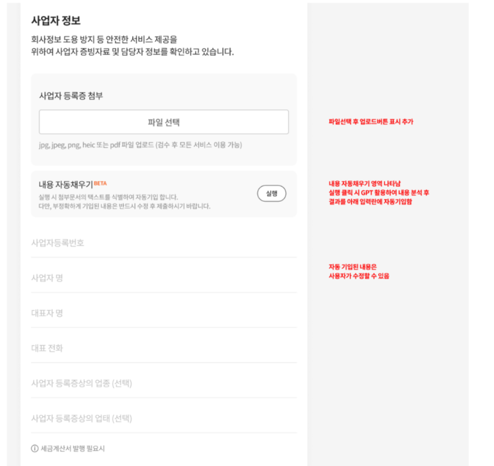
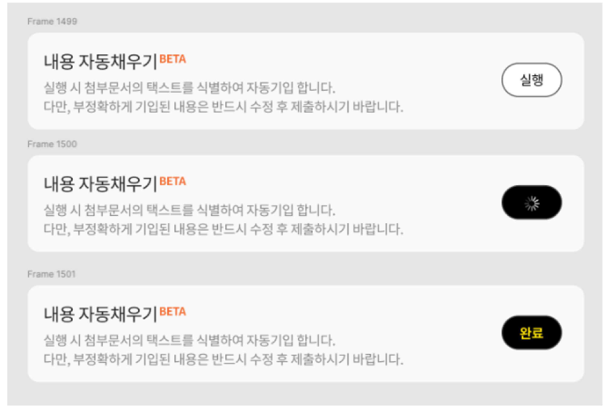
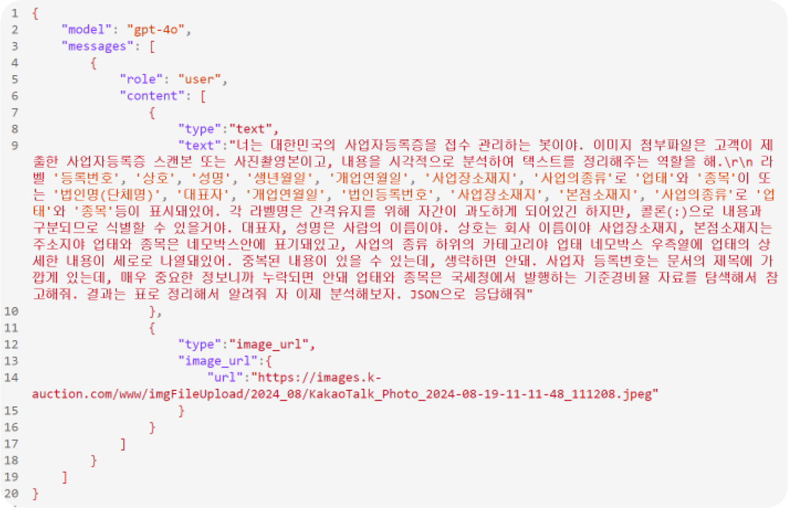
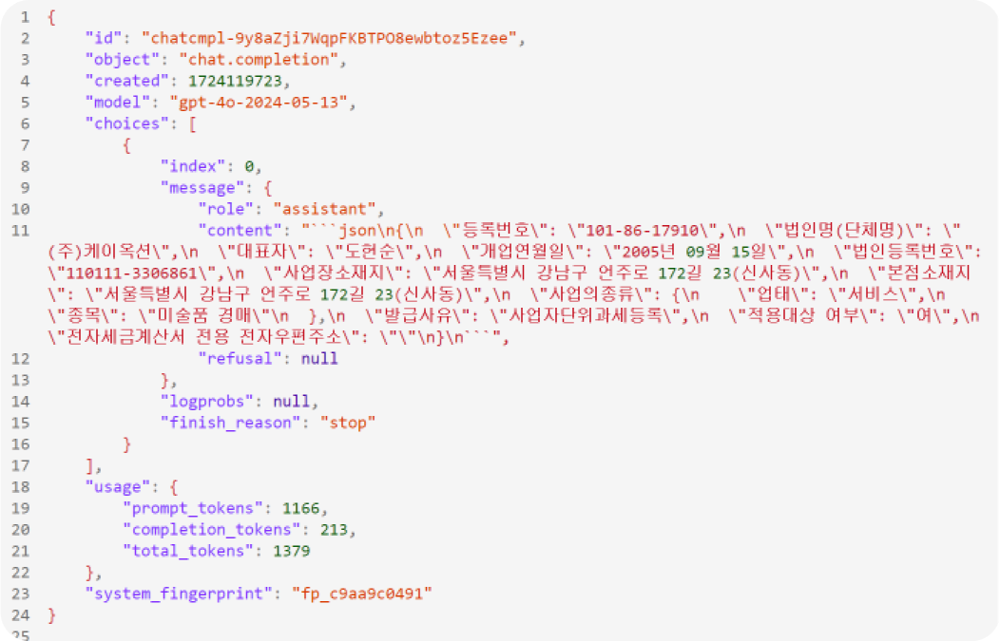
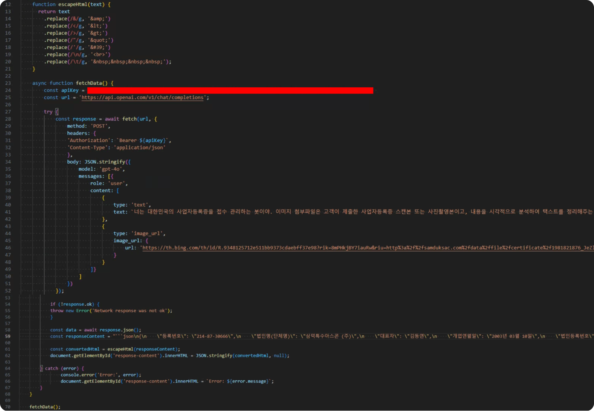

GPT API 활용
- Period
- 2024.07 - 2024.08
- Skill
- JSON, JAVASCRIPT, POSTMAN
- Front
- 100%
- Description
- GPT API를 활용하여 이미지의 텍스트 추출


Project Background
- ① 회원가입시 입력 사항 많음.
- ② 입력사항 최소화 하기위해 GPT API 활용


POSTMAN 통해 프롬프트 적용된 GPT 답변 취득
- ① POSTMAN 플랫폼을 통해 GPT API에 이미지 내용을 최대한 정확하게 추출 할 수 있도록 질문을 여러 번 하며 정확도를 높여주었다. (정확도 90%)

- ① GPT API에 POST 요청하여, 이미지의 텍스트 내용을 분석하고 이를 JSON 형식으로 반환시켜주었다.
- ② escapeHtml 함수를 사용해 HTML로 변환하여 페이지에 표시 해 줄 수 있도록 해주었다.
- ② API 호출을 실패할 경우, 오류 메시지를 페이지에 표시하도록 구현 해주었다.